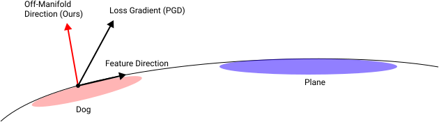
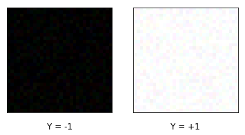
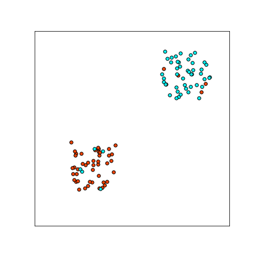

本文是对 Ilyas 等人的论文《对抗样本不是 bug，而是特征》讨论的一部分。您可以在中了解更多关于关于《对抗样本不是 bug，而是 feature》的讨论主讨论文章的信息。
所有回应
Ilyas 等人的评论
我们证明存在仅仅作为“bug”的对抗样本：即分类器中的异常现象，并非数据分布的内在属性。具体而言，我们提出了一种新的对抗样本构造方法，该方法具有以下特点：
- 不在不同模型之间转移，并且
- 不会泄露“非稳健特征”（non-robust features），从而无法用于学习（按照 Ilyas-Santurkar-Tsipras-Engstrom-Tran-Madry [(Ilyas et al., 2019)] 的意义）。
我们复现了 Ilyas 等人在误标记对抗扰动图像上训练的实验（[(Ilyas et al., 2019)] 的 3.2 节），并证明该实验在我们的对抗扰动构造上失效。
传递的信息是：对抗样本到底是特征还是 bug，取决于你如何找到它们——标准的 PGD 能找到特征，但 bug 同样大量存在。
我们还给出了一个玩具数据分布的例子，该分布不包含任何“非稳健特征”（在任何合理的特征定义下），但使用标准训练却会得到高度非稳健的分类器。这再次表明，即使数据分布本质上不存在任何脆弱方向，对抗样本依然可能出现。
背景
许多人将 Ilyas 等人的工作 [(Ilyas et al., 2019)] 理解为：对抗样本并非“bug”，而是“特征”。具体而言，Ilyas 等人假设存在以下两个世界：[1]
- World 1: Adversarial examples exploit directions irrelevant for classification (“bugs”). In this world, adversarial examples occur because classifiers behave poorly off-distribution, when they are evaluated on inputs that are not natural images. Here, adversarial examples would occur in arbitrary directions, having nothing to do with the true data distribution.
- World 2: Adversarial examples exploit useful directions for classification (“features”). In this world, adversarial examples occur in directions that are still “on-distribution”, and which contain features of the target class. For example, consider the perturbation that makes an image of a dog to be classified as a cat. In World 2, this perturbation is not purely random, but has something to do with cats. Moreover, we expect that this perturbation transfers to other classifiers trained to distinguish cats vs. dogs.
我们的主要贡献是证明这两个世界并非互斥——事实上，我们同时处于这两个世界中。Ilyas 等人 [(Ilyas et al., 2019)] 展示了世界 2 中存在对抗样本，而我们展示了世界 1 中同样存在对抗样本。
构造不可迁移的目标对抗样本
我们提出了一种针对给定分类器 $f$ 构造目标对抗样本的方法，这些样本不会迁移到针对同一问题训练的其他分类器上。
回顾一下，对于分类器 $f$、输入样本 $(x, y)$ 和目标类别 $y_{targ}$，目标对抗样本是指满足 $||x - x’||\leq \eps$ 且 $f(x’) = y_{targ}$ 的 $x’$。
构造对抗样本的标准方法是投影梯度下降（Projected Gradient Descent，简称 PGD）[2]，它从输入 $x$ 开始，迭代地更新 $\{x_t\}$ 以最小化损失 $L(f, x_t, y_{targ})$。也就是说，我们沿着以下方向迈步： $$-\nabla_x L(f, x_t, y_{targ})$$ 其中 $L(f, x, y)$ 是分类器 $f$ 在输入 $x$ 和标签 $y$ 上的损失。
请注意，由于 PGD 沿着梯度方向向目标类别迈步，我们可能会预期这些对抗样本会从目标类别中泄露特征。例如，假设我们正在将一张狗的图像扰动成飞机（飞机通常出现在蓝色背景上）。梯度方向很可能倾向于让狗的图像变得更蓝，因为“蓝色”这个方向与飞机类别高度相关。在我们下面的构造中，我们试图消除这种特征泄露。

将狗扰动为飞机的图像流形示意图。损失函数的梯度可以看作由流形上的“特征分量”和流形外的“随机分量”组成。PGD 会同时沿着两个分量迈步，从而导致对抗样本出现特征泄露。我们下面的构造试图只沿着流形外的方向迈步。
我们的构造方法
设 $\{f_i : \R^n \to \cY\}_i$ 是与 $f$ 针对同一分类问题的一组分类器集成。例如，我们可以让 $\{f_i\}$ 是一组从不同随机初始化开始训练的 ResNet18。
对于输入样本 $(x, y)$ 和目标类别 $y_{targ}$，我们像 PGD 一样进行迭代更新来寻找对抗攻击。然而，我们不是直接沿着梯度方向迈步，而是沿着以下方向迈步：[3] $$-\left( \nabla_x L(f, x_t, y_{targ}) + \E_i[ \nabla_x L(f_i, x_t, y)] \right)$$ 也就是说，我们不是通过最小化 $L(f, x, y_{targ})$ 来进行梯度下降，而是最小化“解耦损失”（disentangled loss）[4] $$L(f, x, y_{targ}) + \E_i[L(f_i, x, y)]$$ 这个损失函数鼓励找到一个对 $f$ 具有对抗性、但对集成 $\{f_i\}$ 没有对抗性的 $x_t$。
这些对抗样本对于集成 $\{f_i\}$ 不会具有对抗性。但令人惊讶的是，这些样本对于针对同一问题训练的新分类器同样也不具有对抗性。
实验
我们以 CIFAR10 为数据集训练了一个 ResNet18 作为目标分类器 $f$。对于集成，我们用全新的随机初始化在 CIFAR10 上训练了 10 个 ResNet18。然后我们测试针对 $f$ 的目标攻击迁移到新训练的 ResNet18（使用相同的目标类别）的概率。我们的构造方法产生的对抗样本无法很好地迁移到新模型上。
对于 $L_{\infty}$ 攻击：
| Attack Success | Transfer Success | |
|---|---|---|
| PGD | 99.6% | 52.1% |
| Ours | 98.6% | 0.8% |
对于 $L_2$ 攻击：
| Attack Success | Transfer Success | |
|---|---|---|
| PGD | 99.9% | 82.5% |
| Ours | 99.3% | 1.7% |
不含特征的对抗样本
使用上述方法，我们可以构造出不足以支持学习的对抗样本。在这里，我们复现了 Ilyas 等人的实验“非稳健特征足以支持标准分类”（[(Ilyas et al., 2019)] 的 3.2 节），并证明该实验在我们的对抗样本构造上失效。
回顾一下，Ilyas 等人的非稳健实验是这样的：
- 为 CIFAR 训练一个标准分类器 $f$。
- 从 CIFAR10 训练集 $S = \{(X_i, Y_i)\}$ 出发，构造一个替代训练集 $S’ = \{(X_i^{Y_i \to (Y_i + 1)}, Y_i + 1)\}$，其中 $X_i^{Y_i \to (Y_i +1)}$ 表示针对 $f$ 的对抗样本，将 $X_i$ 从其真实类别 $Y_i$ 扰动到目标类别 $Y_i+1 (\text{mod }10)$。注意，$S’$ 在人类看来是“标签错误的样本”。
- 在训练集 $S’$ 上训练一个新的分类器 $f’$，观察到该分类器在原始 CIFAR 分布上具有非平凡的准确率。
Ilyas 等人用第 (3) 步来论证对抗样本包含有意义的“特征”成分。 然而，对于使用我们方法构造的对抗样本，第 (3) 步会失败。事实上，$f’$ 在“标签平移”后的分布 $(X, Y+1)$ 上具有良好的准确率，这正是我们直观上训练时所使用的分布。
对于 $L_{\infty}$ 攻击：
对于 $L_2$ 攻击：
对抗方块：来自稳健特征的对抗样本
为了进一步说明对抗样本可以“只是 bug”，我们展示了即使真实数据分布不存在任何“非稳健特征”——即不存在本质上脆弱的方向——对抗样本依然可能出现。[5] 在下面的玩具问题中，对抗脆弱性是有限样本过拟合和标签噪声共同导致的结果。
该问题是区分大小为 CIFAR 的全黑或全白图像，这些图像带有少量随机像素噪声和标签噪声。


形式化地，设分布如下。均匀随机选取标签 $Y \in \{\pm 1\}$，然后令 $$X := \begin{cases} (+\vec{\mathbb{1}} + \vec\eta_\eps) \cdot \eta & \text{if $Y=1$}\\ (-\vec{\mathbb{1}} + \vec\eta_\eps) \cdot \eta & \text{if $Y=-1$}\\ \end{cases}$$ 其中 $\vec\eta_\eps \sim [-0.1, +0.1]^d$ 是均匀的 $L_\infty$ 像素噪声， 而 $\eta \in \{\pm 1\} \sim Bernoulli(0.1)$ 是 10% 的标签噪声。 该分布的二维版本样本图显示在右侧。
注意，对于这个问题，存在一个稳健的线性分类器，能够在高达 $\eps = 0.9$ 大小的 $L_\infty$ 攻击下实现完美的稳健分类。然而，如果我们从该分布中采样 10000 张训练图像，并训练一个 ResNet18 直到训练准确率达到 99.9%[6]，得到的分类器却是高度非稳健的：一个 $\eps=0.01$ 的扰动就足以翻转几乎所有测试样本的类别。
输入噪声和标签噪声对于这个构造都是必不可少的。发生这种情况的一个直观解释是：在训练初期，优化过程学会了“正确”的决策边界（事实上，只训练 1 个 epoch 就能得到一个稳健的分类器）。然而，要将训练误差优化到接近 0，需要一个具有很高 Lipschitz 常数的网络来拟合标签噪声，这损害了稳健性。
附录：通过对抗样本进行数据投毒
作为附录，我们观察到 [(Ilyas et al., 2019)]（3.2 节）的“非稳健特征”实验直接意味着数据投毒攻击：一个允许对训练集中每张图像进行不可察觉修改的对手，能够破坏学得分类器的准确率——并且还能对分类器的输出标签施加任意置换（例如交换猫和狗）。
要理解这一点，请回忆原始的“非稳健特征”实验表明：[7]
1. 如果我们在分布 $(X^{Y \to (Y+1)}, Y+ 1)$ 上训练，分类器会在分布 $(X, Y)$ 上学习到良好的预测。
根据标签的置换对称性，这意味着：
2. 如果我们在分布 $(X^{Y \to (Y+1)}, Y)$ 上训练，分类器会在分布 $(X, Y-1)$ 上学习到良好的预测。
注意在情况 (2) 中，我们使用的是正确的标签，只是对输入进行了不可察觉的扰动，但分类器却学会了预测循环平移后的标签。具体来说，使用 [(Ilyas et al., 2019)] 中表 1 的原始数值，这一归约表明：一个对手可以在 CIFAR10 训练集上施加 $L_2$ 范数 $\eps=0.5$ 的扰动，并导致学得的分类器在 43.7% 的情况下输出平移后的标签（猫被分类为鸟，狗被分类为鹿，等等）。
这可以扩展到能够强制任意期望标签置换的攻击。
要引用 Ilyas 等人的回应，请引用他们的
回应合集
回应摘要：正如在 关于《对抗样本不是 bug，而是 feature》的讨论：讨论内容与作者回应 中更详细讨论的那样，仅仅存在作为“特征”的对抗样本就足以支持我们的主要论点。然而，这条评论表明，在现实设置中我们确实可以构造出基于“bug”的对抗样本。有趣的是，这类样本不具备迁移性，这进一步支持了迁移性与非稳健特征之间的联系。
回应：正如关于《对抗样本不是 bug，而是 feature》的讨论：讨论内容与作者回应所述，我们并不打算声称对抗样本完全来自（有用的）特征，而是认为有用的非稳健特征确实存在，因此（至少部分地）导致了对抗脆弱性。事实上，先前的工作已经在理论上展示了对抗样本如何因样本不足 [(Schmidt et al., 2018)] 或有限样本过拟合 [(Tanay et al., 2016)] 而产生，而这里展示的实验（尤其是对抗方块）是对这些事实的一个干净的现实世界演示。
我们的主要论点“对抗样本不会随着我们修复模型中的 bug 而消失”并不会被来自“bug”的对抗样本的存在所反驳。只要对抗样本可以来自非稳健特征（评论者似乎也同意这一点），修复这些 bug 并不能解决对抗样本的问题。
此外，关于 PGD 导致的特征“泄露”，请回想在我们的 $D_{det}$ 数据集中，非稳健特征与正确标签相关联，而稳健特征则与错误标签相关联。我们想要强调的是，正如附录 D.6 所示，在我们的 $D_{det}$ 数据集上训练的模型，实际上在非稳健特征-标签关联上的泛化效果比在稳健特征-标签关联上更好。相反，如果 PGD 引入了少量非稳健特征的“泄露”，我们预期训练出的模型仍会主要使用稳健特征-标签关联。
尽管如此，这些实验巧妙地聚焦于我们对对抗样本理解中的一些更细粒度的细微差别。其中特别引人注目的一点是，通过构造一组明确不可迁移的对抗样本，也阻止了新分类器从该数据集中学习特征。这一发现因此使对抗样本的可迁移性与其所包含的可泛化特征之间的联系变得更加强烈！事实上，我们可以将构造出的数据集加入我们的“$\widehat{\mathcal{D}}_{det}$ 可学习性 vs 迁移性”图（论文中的图 3）——对应于该数据集的点恰好落在趋势线上！
您可以在
主讨论文章